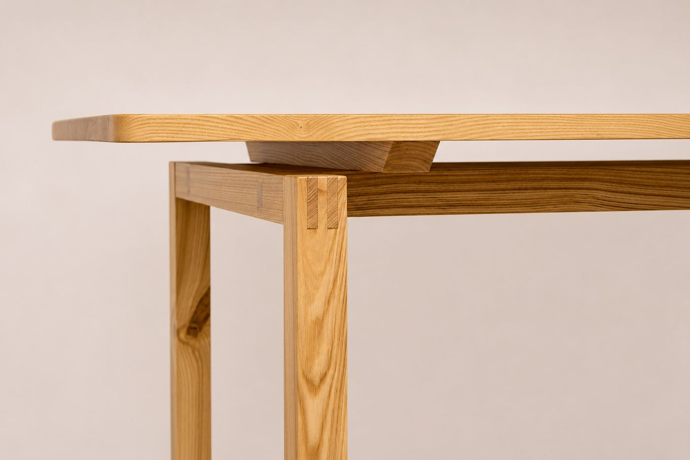

Masă din lemn masiv
[dimensiuni] · [esență]Preț la cerere
Shop BALU · în curând
Piese unicat și obiecte din lemn, realizate între comenzi, cu aceeași grijă ca o lucrare la comandă.



Dimensiuni, esență și finisaj alese pentru spațiul tău, cu proiect 3D înainte de execuție.